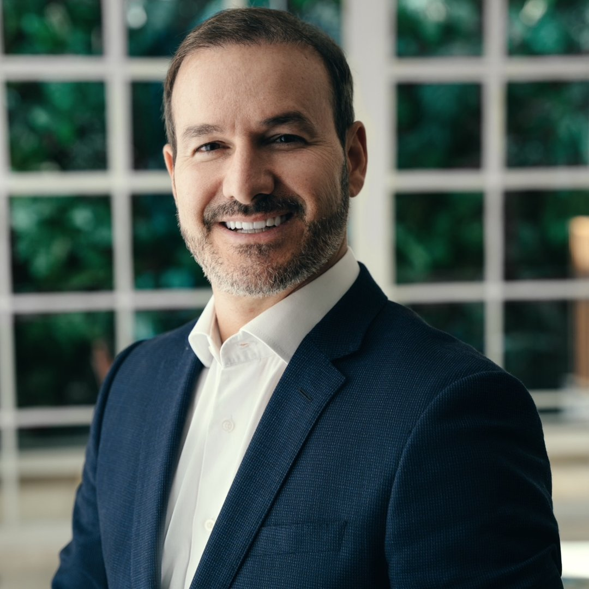
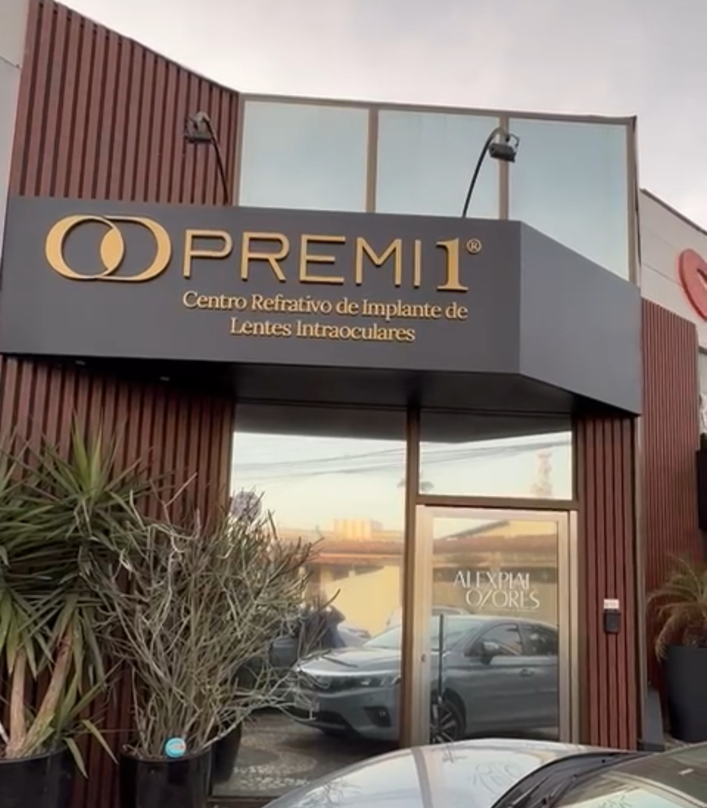

Leitura de perto
Dificuldade para ler mensagens, cardápios ou letras pequenas.
Implante de lentes intraoculares em Feira de Santana
Dr. Alex Piai Ozores
Hoje, você já pode se livrar dos óculos com tranquilidade. Com a experiência do Dr. Alex Piai Ozores, entenda se as lentes premium podem trazer mais liberdade à sua rotina.
Agendar minha avaliação ↗Atendimento personalizado e indicação médica individual.

Veja se alguma dessas situações é familiar para você.
Dificuldade para ler mensagens, cardápios ou letras pequenas.
Dependência para enxergar em diferentes situações.
Mais esforço para enxergar placas, detalhes ou à noite.
Desejo de conhecer novas possibilidades para a visão.

Olhar para cada detalhe
O Dr. Alex avalia as necessidades visuais, rotina, grau, saúde ocular e exames específicos de cada paciente antes de indicar qualquer tratamento.

Para indicar uma lente premium, o Dr. Alex analisa muito mais do que o grau. Exames detalhados ajudam a entender as características de cada olho e a planejar a melhor possibilidade para o seu caso.
Topografia, paquimetria e microscopia ajudam a analisar as características de cada olho.
Exames específicos ajudam a compreender como sua visão se comporta em diferentes situações.

Retinografia, tonometria e fundoscopia complementam uma análise cuidadosa antes da indicação.

Além dos exames da consulta, também é realizada a biometria com Argos, considerado o melhor aparelho para cálculos de lentes intraoculares. Com todas essas informações, o Dr. Alex explica as opções e indica o tratamento mais adequado ao seu caso.

Para entender com tranquilidade
São lentes que substituem o cristalino no momento da cirurgia. Elas também são utilizadas para corrigir graus como miopia, hipermetropia, astigmatismo e presbiopia, ou vista cansada. As lentes premium são personalizadas para cada paciente.
Falar com a equipe ↗Avaliações no Google
Relatos compartilhados por pacientes após o atendimento.
“Simplesmente perfeito. Profissional de excelência. Médico educado, humano e profissional excepcional.”
Avaliação no Google“Clínica de atendimento de excelência, profissionais incríveis e super atenciosos.”
Avaliação no Google“Me senti em casa, pois a clínica é bem aconchegante. Me senti acolhida desde a recepção à consulta.”
Avaliação no Google“Clínica maravilhosa! Ótimo atendimento, médicos excepcionais.”
Avaliação no Google“Me senti em casa, um lugar muito aconchegante e especial, ótimos médicos com atendimento de excelência.”
Avaliação no Google“Ótimo atendimento! Atendimento médico diferenciado. Equipe muito atenciosa.”
Avaliação no GoogleDeslize para ver mais avaliações.
Depoimentos em vídeo
Assista aos relatos de pacientes sobre suas experiências com o cuidado oftalmológico.
Os relatos representam experiências individuais e não constituem garantia de resultados.
Conheça o especialista
Oftalmologista com título de especialista pelo CBO e mais de 20 anos de atuação. Com foco em implantes de lentes intraoculares, possui milhares de pacientes operados extremamente satisfeitos.
“A melhor decisão começa com uma boa avaliação e informação clara.”
Seu caminho começa aqui
Fale com a equipe e escolha o melhor horário.
Entenda o seu caso com uma avaliação detalhada.
Converse sobre as possibilidades avaliadas.
Receba orientação clara para seguir com segurança.

Clínica Premi1
As avaliações e exames são realizados em uma estrutura preparada para consultas, exames oftalmológicos e acompanhamento individualizado, em Feira de Santana.
Rua Equador, 111, KalilândiaDúvidas frequentes
Se preferir, nossa equipe pode orientar você pelo WhatsApp.
A indicação depende de uma avaliação médica completa, que considera a saúde dos olhos, suas necessidades visuais e outros aspectos individuais.
A consulta inclui exames de alta tecnologia que vão ajudar a escolher o melhor tratamento.
Em determinados casos, essa possibilidade pode ser considerada. A definição depende de avaliação médica individualizada e do tipo de lente indicado.
O atendimento acontece na Rua Equador, 111, Kalilândia, Feira de Santana - BA.
O atendimento do Dr. Alex é particular. A equipe orienta sobre reembolso ou livre escolha para Bradesco, Amil e Porto Seguro, conforme as regras de cada plano.
Agende sua avaliação
Agende uma avaliação individualizada.
Agendar minha avaliação ↗